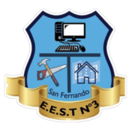
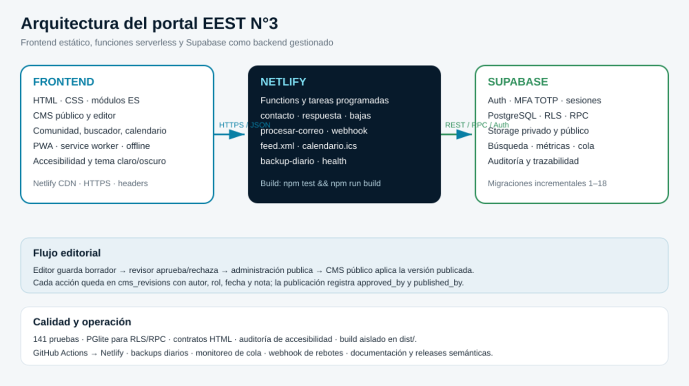
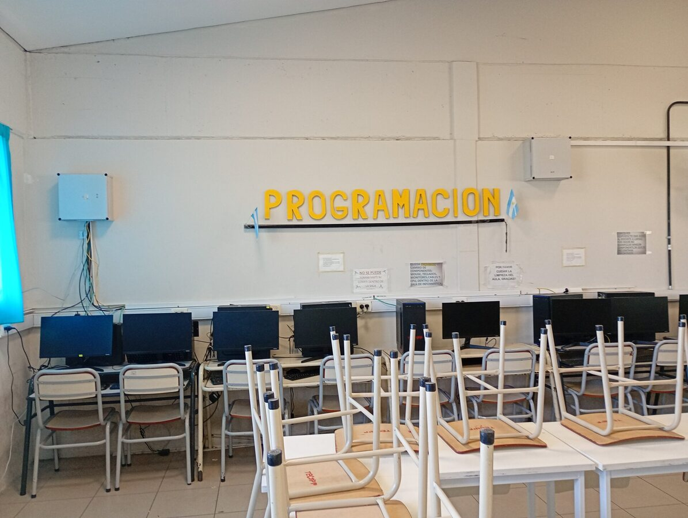
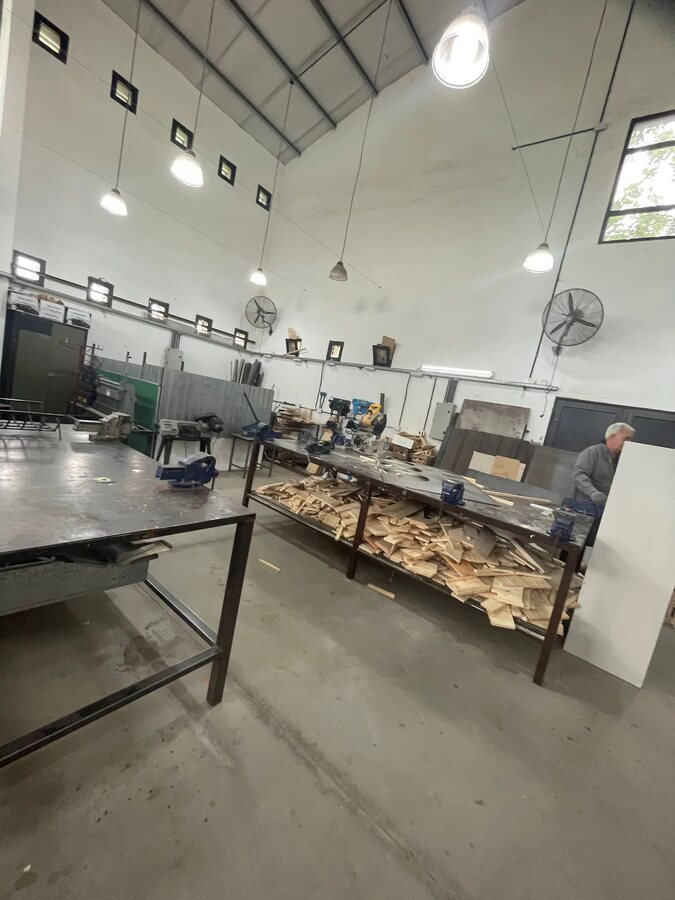
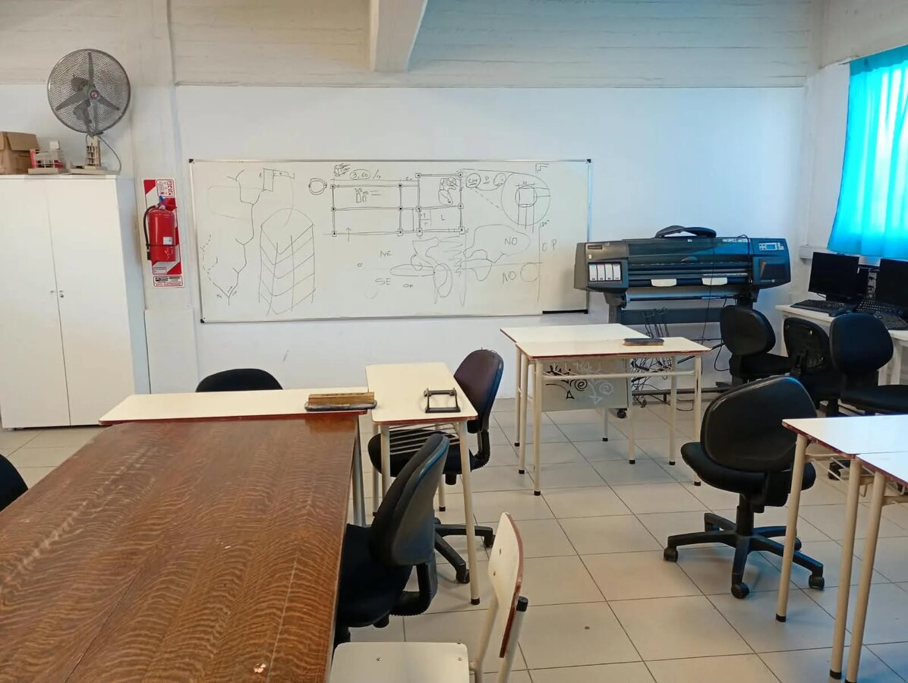
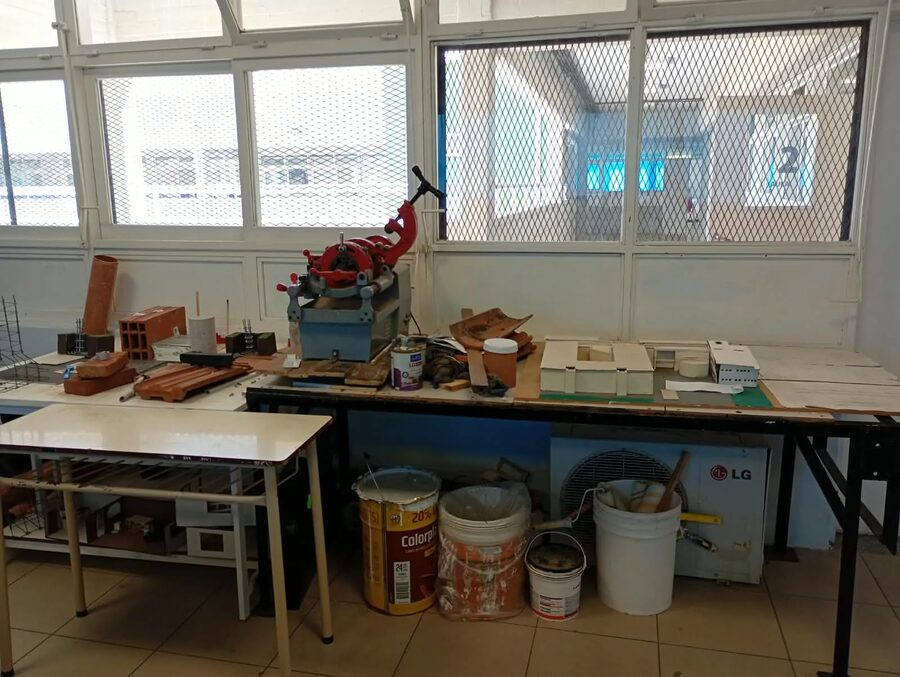
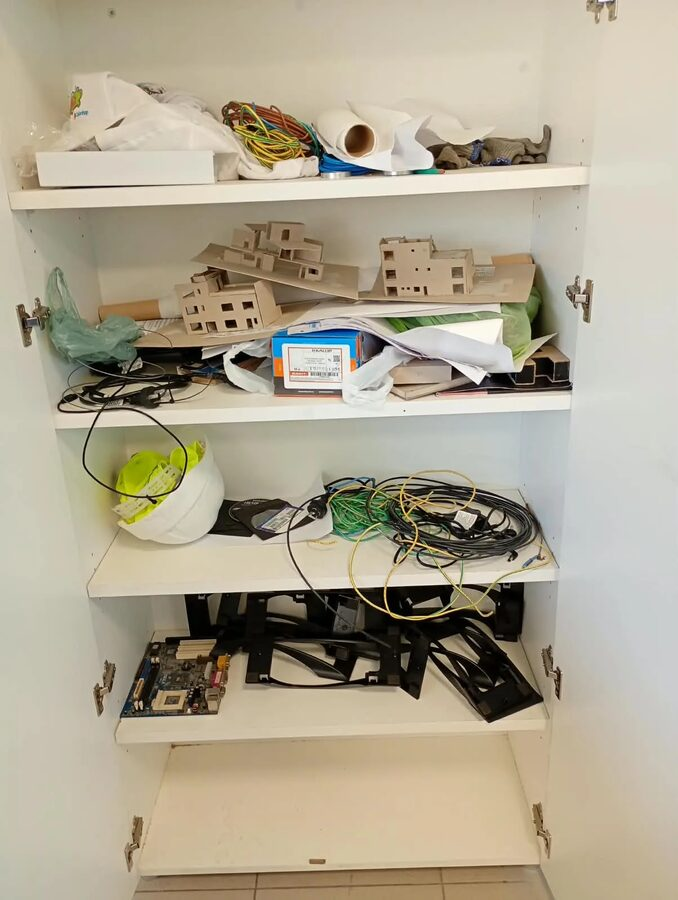
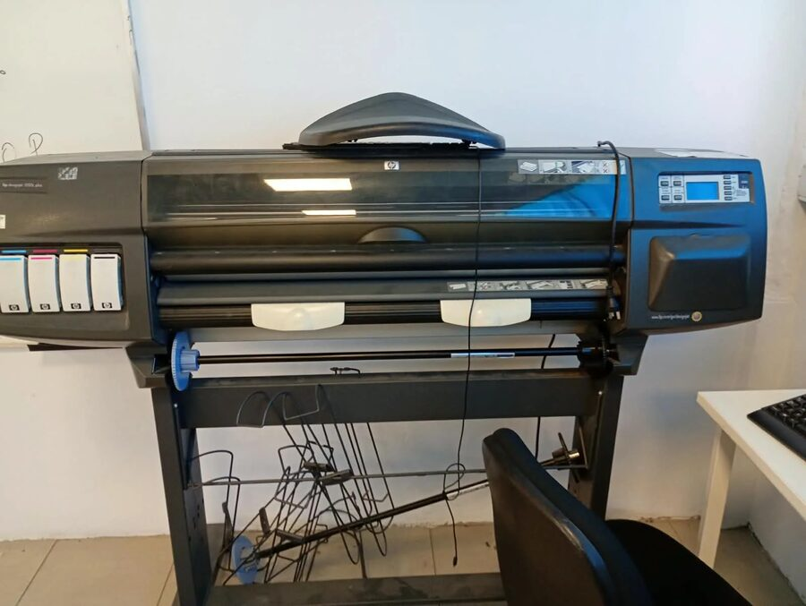

|
 EEST N.º 3 «FRAGATA MOYANO» · SAN FERNANDO Informe técnico
|
| Proyecto | Portal educativo e institucional de la EEST N.º 3 «Fragata Moyano» |
| Tipo de documento | Informe técnico final, con estado de implementación, verificación y pendientes |
| Versión | 1.14.0 · 17/11/2026 |
| Base de código | Commit d0424b9 para la actualización de medios; release final v1.14.0 |
| Producción | https://eest3sf.netlify.app · Netlify + Supabase |
| Calidad | 141 pruebas aprobadas · build correcto · auditoría automática de accesibilidad sin hallazgos |
| Autoría | Equipo del portal, estudiantes y docentes de la EEST N.º 3, con revisión técnica y docente |
| Uso | Documento de revisión institucional. No contiene claves, contraseñas ni datos personales. |
El portal de la EEST N.º 3 evolucionó desde un sitio informativo estático hacia una plataforma institucional con edición editorial controlada, cuentas de comunidad, publicación de comunicados y documentos, calendario, buscador global, notificaciones internas, métricas agregadas y un asistente guiado. La arquitectura mantiene un frontend estático publicado por Netlify y un backend gestionado en Supabase, con funciones serverless para las operaciones que no deben ejecutarse en el navegador.
La entrega 1.14.0 incorpora la carpeta de medios de Maestro Mayor de Obras: seis fotografías y un video del aula y el taller, convertidos a formatos web optimizados, con nombres neutrales y sin exponer los originales que contienen nombres personales. También se actualizaron las portadas de las tres carreras con imágenes específicas: aula de programación para Informática, taller de bancos y herramientas para Madera y Mueble, y aula de dibujo técnico con plotter para Maestro Mayor de Obras.
El sistema se encuentra desplegado, con migraciones 1 a 18 aplicadas, correo transaccional verificado, webhook de rebotes activo, respaldo de contenido probado y 141 pruebas automatizadas en verde. Las deudas pendientes son institucionales: preinscripción con tratamiento de menores, auditoría manual de accesibilidad y definición de responsables de secretos y recuperación de 2FA.
| 1. Alcance y objetivos | 4 |
| 2. Arquitectura y organización | 4 |
| 3. Funcionalidades implementadas | 6 |
| 4. Actualización de medios y portadas | 7 |
| 5. Seguridad, privacidad y accesibilidad | 8 |
| 6. Calidad y verificación | 8 |
| 7. Producción, operación y respaldos | 9 |
| 8. Pendientes y próximos pasos | 9 |
| 9. Conclusiones | 10 |
| Anexos: comandos, migraciones y mapa de archivos | 11 |
El informe documenta el estado del portal al 17 de noviembre de 2026 y la actualización de contenido de las carreras. El alcance incluye:
No forma parte del alcance la preinscripción formal, la matrícula, el tratamiento de documentación sensible de menores, las campañas masivas de correo ni la IA generativa. Skynet continúa siendo un asistente guiado con respuestas y fuentes locales.

El navegador consume HTML, CSS y módulos ES sin framework de frontend. Netlify publica el paquete dist/ y ejecuta funciones serverless. Supabase aporta Auth, PostgreSQL, PostgREST, RLS, RPC y Storage. Las migraciones son incrementales y se aplican una sola vez.
| Capa | Ubicación | Responsabilidad |
|---|---|---|
| Frontend | *.html, assets/, public/ | Páginas, estilos, módulos, CMS público, PWA y recursos. |
| Backend | netlify/functions/, netlify/lib/ | Contacto, correo, webhook, feed, ICS, respaldos. |
| Datos | supabase/migrations/ | Esquema, RLS, RPC, auditoría, Storage y búsqueda. |
| Calidad | tests/, tools/, .github/ | Pruebas, PGlite, build, auditoría y CI. |
| Publicación | dist/ | HTML, assets optimizados y archivos de public/. |
dist/.| Área | Funcionalidades |
|---|---|
| Institución | Inicio, historia, galería, calendario y páginas de las tres carreras con materias, referencias y recursos. |
| Comunidad | Registro, confirmación de correo, login, recuperación, perfil solicitado, aprobación institucional, preferencias e intereses. |
| CMS editorial | Edición por bloques, imágenes, medios, borradores, vista previa, publicación, historial, restauración y respaldos JSON. |
| Flujo editorial | Roles editor/revisor/administrador, estados, envío a revisión, aprobación/rechazo, atribución de publicación y auditoría. |
| Gestión | Consultas privadas, responsables, notas, hilo de respuestas, plantillas, adjuntos por enlace, auditoría y concurrencia. |
| Publicaciones | Comunicados, documentos PDF, proyectos y horarios con filtros, programación, vencimiento y adjuntos. |
| Buscador | Índice de páginas, carreras, publicaciones y calendario; filtros por tipo, carrera y fechas; sinónimos y resultados accesibles. |
| Calendario | Eventos gestionables con fuente y responsable; recurrencia semanal/mensual/anual; `.ics`, suscripción y exportación. |
| Notificaciones | Avisos internos por intereses, lecturas privadas y sincronización con publicaciones. |
| Correo | Cola persistente, HTML, reply-to, reintentos, alertas de fallo, bajas, rebotes y webhook de Brevo. |
| Métricas | Conteos agregados sin IP/cookies, panel, estado del servicio y exportación CSV. |
| Skynet | Asistente guiado, nombre opcional, contexto de carrera, búsqueda de publicaciones e historial privado consentido. |
| PWA y sindicación | Manifest, service worker, offline, RSS, JSON-LD y suscripción al calendario. |
| Seguridad | RLS, 2FA TOTP, exigencia AAL2, códigos de recuperación, revisión/cierre de sesiones y cabeceras CSP. |
cms_revisions con autor, rol, fecha y nota; la publicación registra quién aprobó y quién publicó.La cuenta puede activar TOTP, exigir AAL2 para administración, generar códigos de recuperación de un solo uso y revisar sus sesiones activas. La recuperación elimina los factores y desactiva temporalmente la exigencia; debe ser coordinada por la institución.
Se incorporaron seis fotografías y un video del aula y el taller de Maestro Mayor de Obras. Los archivos originales contenían nombres personales; por privacidad se conservaron fuera del paquete público y se publicaron copias WebP/MP4 con nombres neutrales.
| Archivo | Tipo | Dimensiones | Peso | Descripción |
|---|---|---|---|---|
obras-01.webp | Imagen | 1600×1204 | 207 KB | Taller: materiales, caños, herramientas y maquetas. |
obras-02.webp | Imagen | 1600×1204 | 126 KB | Aula de dibujo técnico con plotter y planos. |
obras-03.webp | Imagen | 1600×1204 | 83 KB | Plotter de gran formato. |
obras-04.webp | Imagen | 1204×1599 | 112 KB | Depósito de materiales y maquetas. |
obras-05.webp | Imagen | 1600×1204 | 108 KB | Aula de proyectos con equipos informáticos. |
obras-06.webp | Imagen | 360×270 | 9 KB | Puestos de trabajo del aula. |
obras-recorrido.mp4 | Video | 854×480 · 8 s | 588 KB | Recorrido por el aula y el taller. |
obras.html, en el catálogo CMS y en la vista de búsqueda. Los archivos originales con nombres personales están en una carpeta ignorada y excluida del build. Informática Aula de programación con equipos. |
 Madera y Mueble Taller con bancos y herramientas. |
 Maestro Mayor de Obras Aula de dibujo técnico y plotter. |
Las portadas se actualizaron en el HTML y en el catálogo CMS. La portada publicada de Madera también se sincronizó en Supabase, conservando la revisión editorial y la fecha de actualización.
 Materiales y herramientas de obra. |
 Maquetas y materiales para proyectos. |
 Plotter para documentación técnica. |
security definer y search_path=''.La auditoría automática npm run auditoria:a11y no encontró hallazgos: etiquetas, nombres accesibles, IDs, jerarquía de encabezados, ARIA, iframes y subtítulos. El video de la galería incluye una pista WebVTT descriptiva y una nota visible. La revisión manual con lector de pantalla, contraste medido y teléfono real sigue pendiente y está documentada en docs/ACCESIBILIDAD.md.
| Verificación | Resultado |
|---|---|
| Suite automatizada | 141 pruebas aprobadas, 0 fallos. |
| Build público | dist/ generado correctamente; originales y pruebas excluidos. |
| PostgreSQL embebido | PGlite valida RLS, RPC, idempotencia, límites, versiones, roles, búsqueda, calendario, correo y 2FA. |
| Accesibilidad automática | Sin hallazgos en todas las páginas. |
| Producción | Páginas, búsqueda, RSS, ICS, manifest, service worker, webhook y cola verificados. |
| Correo real | Envío desde Netlify con estado sent y webhook de Brevo activo. |
| Respaldo | Snapshot de contenido generado y registrado en bucket privado. |
El paquete público quedó en aproximadamente 15 MB, con imágenes de galería optimizadas, video y audio reducidos, y sin originales pesados. La actualización MMO agregó 6 imágenes WebP y un video MP4 de 588 KB.
| Sitio | https://eest3sf.netlify.app |
| Repositorio | github.com/Fabianel10/eest3-fragata-moyano |
| Release | v1.14.0 · 17/11/2026 |
| Base | Supabase · proyecto dzkcpsfmubwwguixtruu |
| Migraciones | 1 a 18 aplicadas; schema_migrations conserva baseline y aplicadas. |
| Funciones | contacto, baja, procesar-correo, procesar-correo-manual, webhook-correo, feed, calendario, backup-diario. |
| Correo | Brevo API; remitente verificado; webhook ID 2672320; EMAIL_ENABLED=true. |
| Respaldos | Diario 03:00 UTC en institutional-backups; snapshot de contenido verificado. |
npm run dev # servidor local en http://localhost:4173 npm test # pruebas y PGlite npm run build # genera dist/ npm run check # pruebas + build npm run auditoria:a11y # auditoría automática de accesibilidad npm run correo:check -- --netlify npm run db:apply:api -- --from <migración>
Las claves se configuran en Netlify y Supabase; no se incluyen en este documento. Las variables públicas (URL y clave publishable) están en assets/js/comunidad-config.js. Las privadas (SUPABASE_SERVICE_ROLE_KEY, BREVO_API_KEY, EMAIL_QUEUE_SECRET, EMAIL_WEBHOOK_SECRET, CONTACT_HASH_SECRET) permanecen solo en el servidor.
| Prioridad | Tema | Estado / criterio |
|---|---|---|
| Alta | Preinscripción informativa | No activada. Requiere definir requisitos, retención, responsables y tratamiento de menores. No se deben recibir documentos sensibles por el formulario público. |
| Alta | Auditoría manual de accesibilidad | Pendiente con lector de pantalla, contraste medido, teclado, zoom 200 % y teléfonos reales. |
| Media | Rotación de secretos | Definir responsables y frecuencia para Brevo, cola, webhook y service_role. |
| Media | Recuperación de 2FA | Los códigos ya existen; falta un procedimiento institucional documentado y autorizado. |
| Media | Monitoreo externo | Evaluar alertas de disponibilidad, errores de funciones y cola detenida. |
| Baja | Más contenidos de carreras | Incorporar fotos y videos autorizados de Informática y Madera con el mismo criterio de privacidad y optimización. |
El portal se encuentra en un estado funcional y verificable: frontend estático accesible, backend con RLS y RPC, flujo editorial con revisión, comunidad con 2FA, correo transaccional operativo, búsqueda global, calendario gestionable, métricas responsables, PWA y respaldos. La actualización 1.14.0 mejora la representación de las carreras con medios específicos y portadas adecuadas, manteniendo la privacidad de los originales.
La prioridad ya no es agregar más superficie técnica, sino consolidar el uso institucional: validar contenidos, completar la auditoría manual de accesibilidad, definir la política de preinscripción y asignar responsables de operación. Esas definiciones son condiciones necesarias para seguir ampliando el portal sin comprometer privacidad, accesibilidad o calidad.
| Migración | Contenido |
|---|---|
| 001–007 | Comunidad, CMS editorial, catálogo, carreras, gestión, notificaciones y Skynet. |
| 008 | Roles editoriales, estados, aprobación y atribución. |
| 009 | Búsqueda global y vista search_index. |
| 010 | Métricas agregadas y RPC de resumen. |
| 011 | Cola de correo, eventos, bajas y alertas. |
| 012 | HTML, reply-to, rebotes, hilo y respuestas. |
| 013 | Calendario gestionable con fuente y responsable. |
| 014 | 2FA exigible y sesiones activas. |
| 015 | Normalización de eventos camelCase de Brevo. |
| 016 | Códigos de recuperación, plantillas, adjuntos y estado del servicio. |
| 017 | Respaldo diario y bucket privado. |
| 018 | Calendario recurrente. |
| Ruta | Uso |
|---|---|
*.html | Páginas públicas y paneles privados. |
assets/js/ | Módulos de interfaz, CMS, comunidad, búsqueda, métricas y Skynet. |
assets/css/ | Estilos generales y de módulos. |
assets/cms/ | Catálogo y galerías editoriales. |
assets/images/MMO/ | Medios optimizados de Maestro Mayor de Obras; originales en carpeta ignorada. |
netlify/functions/ | Funciones serverless y tareas programadas. |
supabase/migrations/ | Esquema, RLS y RPC. |
tests/ | Pruebas de lógica, HTML, PGlite, accesibilidad y build. |
informe final/ | Este informe, su fuente HTML, diagrama e imágenes. |
| Versión | Hito |
|---|---|
| 1.10.0 | Roles editoriales, búsqueda, métricas y cola de correo. |
| 1.11.0 | Correo avanzado, respuestas, calendario, accesibilidad y 2FA. |
| 1.12.0 | Recuperación 2FA, monitoreo, PWA, RSS, respaldos y adjuntos. |
| 1.13.0 | Calendario recurrente y correo verificado. |
| 1.14.0 | Medios MMO, portadas específicas de carreras e informe final. |